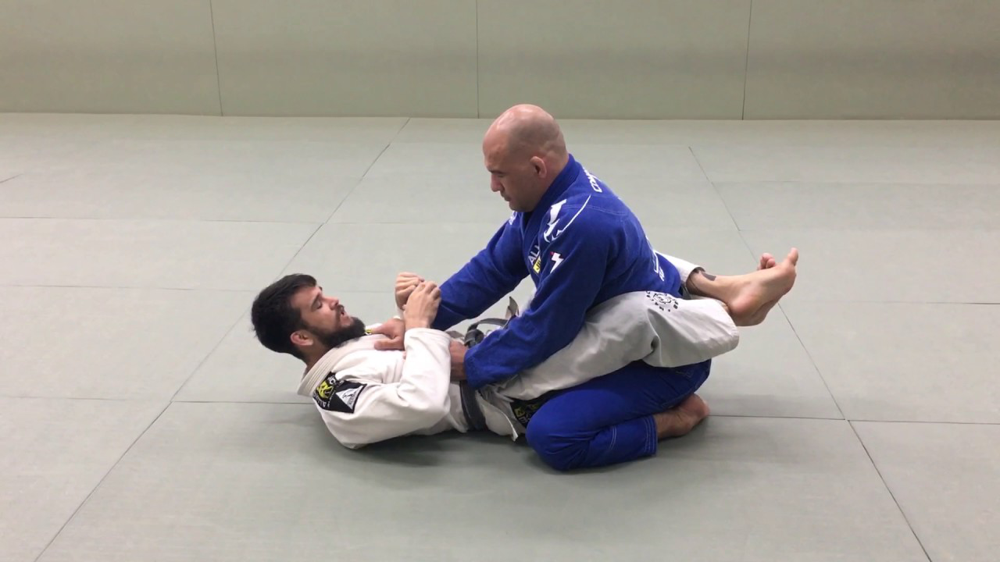

Đây là bài (lược) dịch từ beginners guide của Reddit community r/bjj. Link gốc bài viết: https://www.reddit.com/r/bjj/wiki/beginners-guide/. Một số thuật ngữ mình có thể sẽ để nguyên bản Tiếng Anh, hoặc để kèm trong ngoặc tròn (), chú thích (nếu có) sẽ được đặt trong dấu ngoặc tròn sau “ND”.
Mục đích đánh giá lại những gì mình đạt được sau 6 tháng theo đuổi BJJ.
Hướng dẫn Jiu-jitsu cho người mới bắt đầu
Chào mừng đến với Brazil Jiujitsu và chào mừng đến với r/bjj! Đây là hướng dẫn tổng hợp dành cho người mới để bắt đầu hành trình Jiu-jitsu của bạn.
Chúc may mắn, và hãy tử tế!
Bạn có đề xuất, cải tiến hoặc nhận xét cho bài viết này? Để nó ở đây.
BJJ là gì?
Brazilian Jiu-jitsu, đôi lúc gọi là Jiu-jitsu (ND: 八四柔术 Nhu thuật Brazin) là một môn võ kế thừa từ Judo (ND: 柔道 Nhu đạo Nhật bản). Nó:
- Đối kháng (contact), nghĩa là bạn cần tranh giành ưu thế, chiến thắng với người khác;
- Tay không (bare-handed), nghĩa là không vũ khí nào được chấp nhận;
- Dựa vào vật lộn (grappling-based), phương thức chiến đấu là vật (grappling, wrestling), đấm (punching) và đá (kicking) là không được phép;
- Submission-based (ND: chưa thể dịch từ này), nghĩa là mục tiêu cần đạt được là bắt đối thủ đầu hàng (submission) thông qua một đòn siết nghẹt (choke) hoặc đe dọa tổn thương tới các khớp của họ, hơn là chỉ đơn thuần là chiếm vị trí ưu thế (positioning) hoặc ghim chặt đối thủ (pinning).
BJJ khác với Judo ở chỗ nó thiên về vật lộn / địa chiến (ground grappling), trong khi Judo nhấn mạnh về quăng (throws) và quật ngã (takedowns) từ vị trí đứng.
Tôi có (thực sự) thích Jiu-jitsu không?
Bạn sẽ thích Jiu-jitsu nếu:
- Đang tìm kiếm một bài thể thao rèn luyện (workout), nhưng ghét tập các môn thể dục như chạy bộ, nâng tạ;
- Tìm kiếm một cộng đồng sôi động;
- Cần tìm cảm giác có mục đích và tiến bộ;
- Thích các hoạt động thể thao kết hợp thể chất và trí não (cerebral), như leo núi;
- Đã từng đào tạo các môn thể thao đối kháng (combat) khác;
- Muốn thử gì đó mới mẻ?.
Jiu-jitsu có phù hợp với tôi không?
Nó phù hợp với tất cả bất kể tuổi, thể trạng, giới tính, hoàn cảnh, kinh nghiệm. Tuy nhiên, có thể tập và không cần coi nó là sở thích của bạn, và bạn cũng không cần xuất sắc trong môn này. Mục tiêu không phải là hơn thua với người khác, mà là trở nên tốt nhất có thể.
Làm sao để thử và bắt đầu
- Tìm một phòng tập, nên là các phòng có đánh giá tốt;
- Tìm hiểu lịch tập, chính sách, giá cả;
- Mặc quần áo thoải mái, không đeo trang sức, mang nước, thời điểm này bạn chưa cần trang bị nào khác;
- Tập thử;
- Lớp thông thường sẽ bao gồm: khởi động (warmups), dạy kĩ thuật và tập luyện (teaching & drilling), sau đó là đối kháng (sparring, rolling, open mat). Tập nhẹ nhàng và không nên kì vọng quá nhiều;
- (& 7) Xin tập thử thêm, hoặc tìm một CLB khác, hãy mạnh dạn, cho tới khi ưng ý.
Lựa chọn CLB/Phòng tập
Nếu thấy thích BJJ thì bạn nên commit tới một phòng tập. Dưới đây là các tiêu chí:
- Không khí (Vibe): Thấy hợp không (jibe with the vibe), các thành viên có thân thiện không. Trang thiết bị có sơ sài, có mùi hay không?;
- Chất lượng (Quality): Có năng lực tổ chức tốt hay không? Họ focus vào Jiu-jitsu hay các môn khác nữa? Người chủ có đai đen hay không? Họ đào tạo BJJ bao lâu rồi?;
- Địa điểm (Location): Thuận tiện cho bạn hay không?;
- Chi phí (Cost): Có phù hợp với bạn hay không?.
Các quy tắc lịch sự
Tổng quan
Hãy lịch sử và tuân thủ các quy tắc. Bạn đang tham gia một cộng đồng đang cố gắng cải thiện kỹ năng của họ, chứ không phải chiến đấu để đứng đầu theo kiểu của bạn.
Vệ sinh và sức khỏe
- Đừng đến phòng tập nếu bạn ốm hoặc có virus hoặc bệnh truyền nhiễm khác;
- Mang dép hoặc giày ngoài thảm, đi chân đất trên thảm;
- Giặt, vệ sinh đồ tập sau mỗi buổi học;
- Cắt gọn ngón chân / tay để tránh làm bị thương bạn tập;
- Sử dụng xịt khử mùi, nước súc miệng nếu cần;
- Trước buổi tập nếu có mồ hôi hoặc mùi, hãy tắm trước;
- Tắm càng sớm càng tốt sau buổi tập để tránh nhiễm trùng da;
- Chú ý đến da, nếu có vấn đề hãy ngừng tập và gặp bác sĩ.
Tập luyện kĩ thuật (Drilling)
- Chia đều thời gian của bạn và bạn tập;
- Chỉ nên đưa ra lời khuyên khi bạn thực sự tự tin, nếu không thì nghe coach (ND: Biết thì thưa thốt, không biết dựa cột mà nghe);
- Mục tiêu là tập luyện các động tác trong điều kiện không có áp lực từ đối thủ. Nên đừng tạo áp lực quá nhiều cho bạn tập, cũng không nên quá thoải mái như một người nộm;
- Tập trung vào các chuyện động (movement) hơn là đạt được kết quả của động tác.
Tập luyện đối kháng (Rolling)
- Bạn có quyền từ chối việc roll với bất cứ ai, trong bất cứ thời điểm nào, hoặc bất kì lí do nào. Họ có thể không thích hoặc cho rằng nó thiếu lịch sự, nhưng, bạn có quyền;
- Người ta thường đập và cụng ta (hand slap and dump) để đánh dấu cho một ca roll bắt đầu;
- Cảm ơn bạn tập sau mỗi lần roll, bất kể nó kết thúc như thế nào;
- Mục tiêu của roll là học hỏi chứ không phải chiến thắng, để dành cái ham muốn đó cho các trận đánh thực sự;
- Điều tệ nhất bạn có thể làm là gây ra chấn thương cho bạn tập;
- Một số thế submission có thể chuyển từ không đau cho tới tạo ra chấn thương nghiêm trọng nhất nhanh. Trong các trường hợp đó, hãy siết lực chậm lại để tạo thời gian cho bạn tập tap-out;
- Khi roll với một bạn tập nhỏ hơn mình nhiều, đừng cố gắng dùng trọng lượng để đè họ xuống. Mục tiêu là học hỏi, và 5 phút đè như vậy và chả ai học được gì cả. Hãy cố linh hoạt nhiều tư thế;
- Các va chạm tình cờ vào các vùng nhạy cảm là điều bình thường trong các môn vật. Cứ tiếp tục roll hoặc nói “Sorry” nếu bạn muốn, không nên giải thích dài dòng và nên tập trung vào tập luyện.
Tổng quan các vị trí trong BJJ
Jiu-jitsu có phong phú các thế, tư thế chiến đấu (configurations and positions). Mỗi tư thế, đối với cả bạn và bạn tập đều sẽ có các chiến lược, kỹ thuật khác nhau.
Mỗi thế sẽ tương ưng là sự chiếm ưu thế cho một cá nhân, và sự thất thế cho một bên còn lại. Đối với người chiếm ưu thế, bạn đang tấn công, ngược lại, bạn đang trong vai trò phòng thủ. (ND) Sự chênh lệch giữa ưu / thất thế cũng sẽ khác nhau cho các thế đánh khác nhau. Mỗi người đều sẽ cố gắng dùng các chiến lược và kĩ thuật để tạo lợi thế cho bản thân.
Dưới đây là một số thế như vậy, bạn không cần ghi nhớ, bạn sẽ được dạy theo thời gian:
All photos below credit to orginal post.
Closed Guard
Closed Guard là tư thế phố biến nhất cho người mới bắt đầu, hai chân bạn sẽ vòng qua hông (waist) đối thủ và dùng mắt cá chân khóa (ankles) lại. Lợi thế thuộc về người ở trên (bạn tập của bạn).
Trong Jiu-jitsu, “guard” mang nghĩa tương tự như “chân”, tư thế này được gọi như vậy vì bạn dùng chân khóa kín đối thủ.

Open Guard
Khi người ở trên có thể thoát, gỡ được móc nối giữa hai mắt cá chân, sẽ hình thành nên tư thế Open Guard. Lúc này “guard” đã được “open”, tư thế này rất linh động và có nhiều biến thể / tên gọi cho từng vị trí cụ thể, như Spider Guard hay Lasso Guard. Nhìn chung tư thế này không có lợi cho cả hai người.

Side Control
Khi một người có thể vòng qua chân của người phía dưới và kiểm soát thân mình (torso) thì người đó được xem là đã “passed the guard”, động tác này kết thúc bằng từ thế Side Control. Lợi thế thuộc về người đó - người ở trên.
Mount
Nếu người ở trên có thể giành được nhiều quyền kiểm soát hơn, họ có thể ngồi lên phần bụng (hips) hoặc ngực (chest), tư thế này được gọi là Mount và nó cực kì có lợi cho người ở trên.

Back
Con người giỏi chiến đấu với các mối đe dọa đến trước mặt mình hơn là từ đằng sau. Vì thế lấy lưng là một tư thế tốt cho việc tấn công, và bị lấy lưng sẽ tạo ra sự thất thế cực lớn cho việc phòng ngự.
Turtle
Tư thế con rùa mang lại một chút lợi thế cho người ở trên. Gọi là con rùa bởi vì tư thế của người ở dưới.

Half Guard
Khi một người có thể dùng chân khống chế được một chân (thay vì từ phần hông và hai chân) của đối thủ, từ phía dưới, ta gọi đó là Half Guard. Ai có lợi thế còn tùy thuộc vào từng trường hợp cụ thể
Làm sao để tiến bộ
Chấp nhận thất bại, nhất là khi chỉ mới bắt đầu
- Rất là bình thường nếu bạn cảm thấy mình tệ. Bạn đang đào sâu vào một lĩnh vực sâu và phức tạp, ngay cả đai đen cũng có lúc nhận thấy nhiều thứ họ chưa thể hiểu được;
- Nếu bạn không có kinh nghiệp vật (grappling) trước đó, 12 tháng đầu tiên bạn sẽ học 108 các phong cách tap-out khác nhau. Vậy nên đừng đo lường mức độ tiến bộ của bạn bằng các chiến thắng, mà nên là cách bạn cải thiện việc phòng thủ;
- Hãy khiêm tốn và học cách trân trọng từng sự tiến bộ, tập trung vào học hỏi thay vì kết quả cuối cùng. Tất cả những gì bạn có thể đạt được là một chút tiến bộ mỗi ngày, ai cũng thế, ngay cả khi bạn không chứng kiến.
Việc khai triển kĩ thuật khó hơn rất nhiều khi Roll
- Bạn có thể học được một kĩ thuật và thực hành nó một cách mượt mà khi đối thủ gần như không kháng cự khi tập luyện;
- Nhưng khi vào live roll thì khác, khi đối thủ biết bạn muốn làm gì, bạn sẽ thậm chí không thế thực hiện được bước đầu tiên và mọi thứ đều đi chệch khỏi hướng. Hoặc, bạn cũng cảm thấy đầu óc bạn hoàn toàn trống rỗng (ND: hành động theo bản năng);
- Điều này là hoàn toàn bình thường, học các bước cơ bản là khởi đầu cho hành trình dài để trở nên thành thạo. Hãy kiên nhẫn nghiên cứu xem mình đã làm chưa đúng ở bước nào, và tiếp tục thực hành.
Làm sao tiến bộ một cách có hiệu quả
- Hãy đặt câu hỏi cho coach;
- Hãy hỏi các tiền bối đi trước, nhớ rằng cần phải tôn trọng thời gian của họ;
- Hãy xem các video hướng dẫn, tài nguyên rất phong phú trên Youtube. Cẩn thận với click-bait và video-brain - hãy xem có chọn lọc:
- Click-bait: nhờ thuật toán của Youtube mà các video với tiêu đề ‘learn this unstoppable sweep’ hoặc ‘never get submitted again ever’ sẽ xuất hiện rất nhiều. Những thứ này không chính xác, hãy học những thứ basic. Những thứ trông fancy sẽ không phù hợp với mức độ kĩ năng của bạn đâu;
- Video-brain: rất dễ để xem hết hai ba chục video youtube về các kỹ thuật submissions, escapes. Nhưng não bộ bạn sẽ không thể hấp thu hết được chừng đấy các kỹ thuật một cách chi tiết. Nếu bạn muốn áp dụng trong rolling, bạn sẽ thấy đầu ong ong và nhức nhức khi cố nhớ về kỹ thuật nào đó đã xem trong video nào đó trong hàng chục cái video khác. Hãy đi sâu thay vì đi rộng (recommended to go deep rather than broad). Xem nhiều video cho cùng một kĩ thuật, hoặc xem một video lặp lại nhiều lần và cố gắng tiếp thu trước khi move on.
- Yêu cầu các bạn tập open mat học một kĩ thuật cụ thể hơn là rolling. Rolling mang lại cho bạn kinh nghiệm, nhưng nó sẽ rất loãng. Nếu bạn tập một tư thế guard hoặc một kỹ thuật với nhiều bạn tập khác nhau trong một thời gian ngắn, bạn sẽ thấy sự cải thiện rõ rệt. Hãy bắt đầu với tư thế mà bạn chưa thành thạo và reset nếu một trong hai thoát được khỏi đó. Tất nhiên cũng nên hỏi bạn tập xem họ muốn tập kĩ thuật nào;
- Sau mỗi buổi tập, hãy nghĩ về những thứ mình chưa làm được khi roll. Hãy chọn 1, 2 chủ đề trong đó để tự học qua video, buổi sau bạn có thể thực hành cho tới khi thấy có cải thiện. Cứ thế tiếp tục một chu trình như vậy.
Trang bị, phụ kiện
Gi
Bạn có thể mua Gi online hoặc ở ngay phòng tập. Tuy nhiên mua online sẽ rẻ hơn. Có một số phòng tập sẽ yêu cầu mua Gi hoặc patch.
Hãy kiểm tra kĩ size chart, nhất là nên hỏi những bạn tập có cùng kích thước với mình. Cũng nên nhớ rằng size chart có thể khác nhau cho các brand khác nhau.
Rashguard (for No Gi)
TODO
Quần áo lót (Underclothes)
Đối với Gi, bạn có thể mặc đồ lót dưới Gi (ND: vì áo Gi có thể bị kéo bung trong lúc tập luyện và bạn không muốn để ngực trần). Bạn có thể dễ dàng tìm các elastic/compression shirts và pants (spat) online. Hãy nhớ rằng chúng có thể bị nắm/kéo (ND: như là một phần của các kĩ thuật luyện tập với Gi), và có thể làm bạn nóng nực.
Trong thi đấu, nam không được mặc gì dưới áo Gi (Gi top). Còn nữ thì phải mặc compression shirt, gymnast top, hoặc one-piece swimsuit.
Bảo vệ hàm (Mounthguard)
Mặc dù không phải là môn về đấm / đá (striking), sẽ vẫn có khả năng đối thủ, bạn tập của bạn đánh trúng mặt hoặc siết vào hàm của bạn. Do đó, việc đeo bảo vệ hàm sẽ giúp hạn chế các tổn thương tới hàm, răng, môi, lưỡi - những tổn thương rất đau và khó hồi phục.
… Cup
Một số người dùng cup để vào vệ háng / bẹn (crotch), nhưng nó thực sự không cần thiết. Cup có thể làm tổn thương bạn tập, và bị cấm trong hầu hết các tour đấu.
Bảo vệ đầu (Headgear)
Bảo về đầu sẽ giúp bạn hạn chế các tổn thương tai - thường dẫn đến “tai súp lơ” (cauliflower ear). Tuy nhiên nó không phổ biến và việc dùng headgear bị cấm trong các tour đấu. Bạn chỉ nên dùng khi đã có các chấn thương và muốn chúng không nặng thêm cho tới khi lành lại.